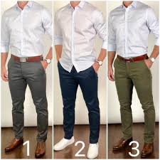

Mi nombre es Dylan alejandro baltazar diaz, soy un chico bastante traquilo, tengo 17 años actualemnete, me gusta ecuchar musica, electronica, clasica, y en ingles,
no acostumbro mucho a salir prefiero quedarme en casa jugando o asiendo cualquier otra actividad, mi pasatiempo favorito es investigar sobre tecnologia,
en mi tiempo libre acostumbro a pasar tiempo con mi mamá y jugar con mis mascotas , tengo pocos amigos pero no me quejo ya que a pesar de ser pocos
me llevo vastante bien con ellos casi siempre estamos juntos en el salon, mis colores favoritos son el negro, rojo, blanco, y azul, y en base a esos colores
se da mi forma de vertir que suele ser casual o de manera formal, ya que es el estilo que mas me agrada y con el que me siento comodo, y con esto mismo se
forma mi personalidad la cual es seria, ya que siempre trato de superarme a mi mismo pero sin comentarselo a los demas ya que no queiro que se metan en mi camino
por esto mismo no salgo de fiestas ni nada de ese estilo
| Artista favorito | Cancion Favorita | vestimenta favorita |
|  | ||
| Alan Walker | Un Año | Formal y casual |